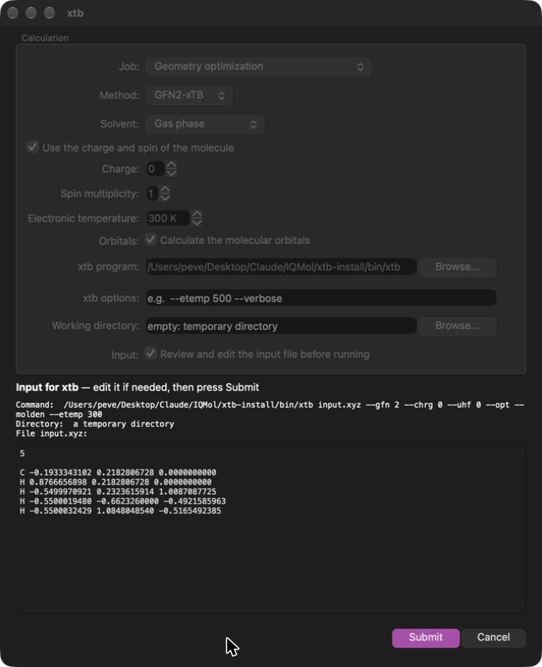

button on the
Tool Bar or with the menu option
Build→xtb Setup... (Ctrl+Shift+X).
button on the
Tool Bar or with the menu option
Build→xtb Setup... (Ctrl+Shift+X).
IQmol can run the semiempirical tight-binding methods GFN2-xTB and GFN1-xTB of the xtb package (Grimme group) directly on the molecule in the Viewer. The calculations are fast enough to be run interactively and can optimize the geometry, calculate energies, vibrational frequencies and molecular orbitals, with or without an implicit solvent. The results are added to the molecule and can be examined with the usual IQmol tools. The force field GFN-FF is also available for building and minimizing structures.
All settings are collected in the xtb window, which is opened with the
button on the
Tool Bar or with the menu option
Build→xtb Setup... (Ctrl+Shift+X).

The calculation is carried out either by
Both give the same energies and frequencies (the frequencies differ by
about 0.05%). The program is the more flexible of the two, as it offers the
options described under xtb Program. The library
cannot write the orbital basis set, so when orbitals are requested IQmol
runs one extra single point with the xtb program to obtain them; without the
program no orbitals are produced.
The settings are remembered between sessions, except for the job, which always starts as a geometry optimization.
| Job | Single point energy, Geometry optimization (the atoms are moved to the optimized structure, which can be undone from the History), Vibrational frequencies or Geometry optimization and frequencies. |
| Method | GFN2-xTB or GFN1-xTB. |
| Solvent | Gas phase, or one of the implicit solvents of the ALPB model (water, methanol, acetonitrile, ...). The solvation free energy is reported with the result. |
| Charge, spin | By default the charge and spin multiplicity of the molecule are used. Unticking the box lets you enter other values for this calculation, for example to calculate a cation or a triplet. An impossible combination is reported before xtb is started. |
| Electronic temperature | The temperature of the Fermi smearing of the orbital occupations in K (default 300 K, as in xtb). Very low values cannot be used when the highest occupied and lowest unoccupied orbitals are (nearly) degenerate. |
| Orbitals | Also calculate the molecular orbitals, see Molecular Orbitals. Switch this off for very large molecules. |
Pressing Run starts the calculation. The window shows the output
of xtb as it is produced and the molecule cannot be edited until the
calculation has finished or been cancelled.
When the xtb program is the backend, four further settings appear:

The geometry in the input file can be edited; Submit runs xtb with
the text exactly as it appears, Cancel does not run it. The number
of atoms has to stay the same. The charge, spin and the other settings are
changed in the fields above, they are part of the command line shown. For an
optimization followed by frequencies the edited input is used for the
optimization.
When the calculation has finished the window shows a summary: the energy (and its change for an optimization), the norm of the gradient, the number of optimization cycles, the HOMO-LUMO gap, the dipole moment, the solvation free energy and the time taken. The energy is also shown in the Info layer of the molecule.

Save Output... writes the text of the xtb output to a file. Save
All Files... copies every file the xtb program produced (input, output,
optimized geometry, orbitals, ...) to a folder of your choice. When no
working directory has been set the files are kept until the next run or until
IQmol is closed. A calculation can be stopped with Cancel.
The frequencies, IR intensities and normal modes are added to the
molecule as a Frequencies layer named after the method, together with the
zero point energy. They are used just like those from a Q-Chem calculation,
see Vibrational Frequencies. The frequencies
should be calculated at an optimized geometry; the window warns when the
structure is not a stationary point, so the job Geometry optimization and
frequencies is usually the right choice. The result of an earlier run is
replaced.
The orbitals of the final geometry are added to the molecule as an
Orbitals layer under Surfaces, named after the method. They are plotted with
the same tools as other orbitals: double click the layer to open the surface
dialog and select, for example, the HOMO, as described in
Plotting Surfaces. Orbital
energies, densities and Mulliken densities are available also. The orbitals
are those of the minimal valence basis of the xTB methods; the same spatial
orbitals are used for both spins. The orbitals of an earlier run are
replaced. They are not available for GFN-FF.
GFN-FF can be selected in Build→Select Force Field (next to MMFF94,
UFF and the others) or as the default force field in the Preferences. It is
then used by  Minimize Structure and
for the energy shown while building. It always runs in the gas phase and does
not support constraints or frozen atoms, which are ignored with a warning.
Minimize Structure and
for the energy shown while building. It always runs in the gas phase and does
not support constraints or frozen atoms, which are ignored with a warning.
Optimizing methane and plotting its HOMO:
button. Leave the job on Geometry optimization, the method
on GFN2-xTB and the solvent on gas phase, and press Run. The xtb program is not part of IQmol. It can be obtained from the xtb
releases or built
with the script build-xtb-macos.sh that comes with the IQmol source
(it needs Homebrew's cmake, gcc and openblas). Set its location in the xtb
window or in the Preferences. To build IQmol with the built-in library, point
XTB_ROOT to the xtb installation when running
build-macos.sh.